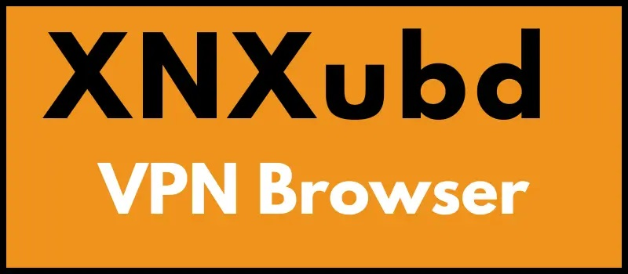

XNXUBD VPN Browser APK 3.4.2 te ofrece una experiencia de navegación privada, segura y sin restricciones geográficas. Descarga gratis y accede a contenido bloqueado con velocidad ultra rápida.
1 XNXUBD VPN Browser APK 3.4.2 es una innovadora aplicación que combina las funciones de un navegador web con una potente VPN integrada, proporcionando a los usuarios una experiencia de navegación totalmente privada, rápida y sin censura. Gracias a su diseño intuitivo y ligero, esta app es ideal tanto para usuarios novatos como avanzados que buscan proteger su privacidad en línea y acceder a contenidos bloqueados por región.
Con la versión 3.4.2, XNXUBD VPN Browser ha mejorado significativamente su rendimiento, ofreciendo conexiones más estables y rápidas a través de servidores seguros en múltiples países. Además, no requiere registro ni configuración complicada: solo descárgala, instálala y comienza a navegar sin límites.